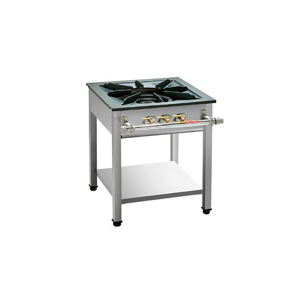
ST600-001
Single-burner commercial standing gas range for professional kitchen use.
VIEW PRODUCTBrowse our selection of commercial gas ranges designed for restaurants, commissaries, cafés, and other professional kitchens.
Commercial standing gas ranges with flexible burner configurations for restaurants and professional kitchens.

Single-burner commercial standing gas range for professional kitchen use.
VIEW PRODUCT
Two-burner commercial standing gas range designed for professional kitchens.
VIEW PRODUCT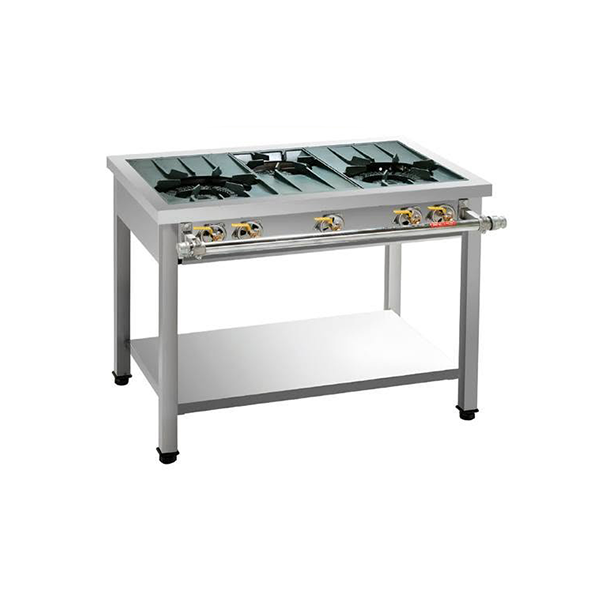
Three-burner commercial standing gas range for professional kitchen operations.
VIEW PRODUCT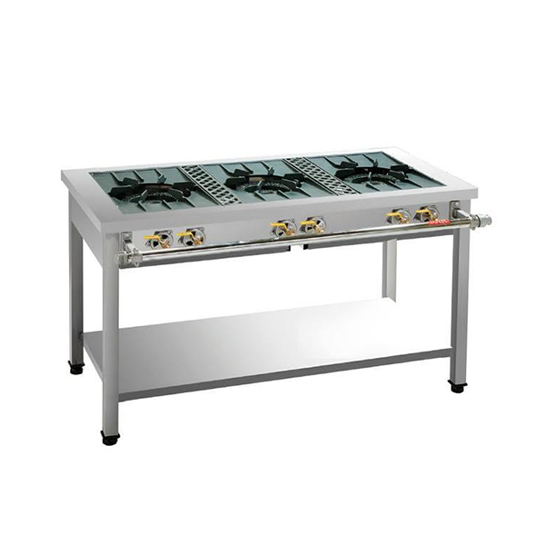
Three-burner commercial standing gas range designed for high-volume kitchens.
VIEW PRODUCT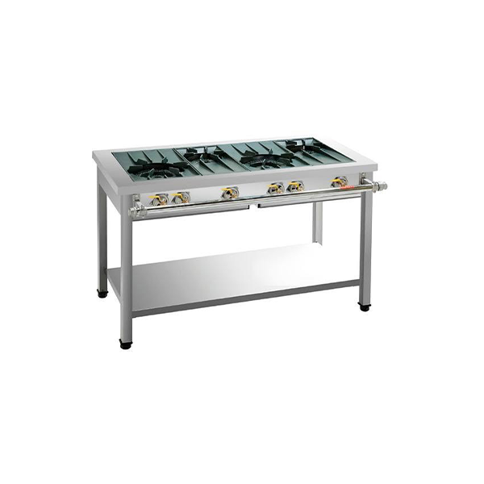
Four-burner commercial standing gas range for professional kitchen use.
VIEW PRODUCT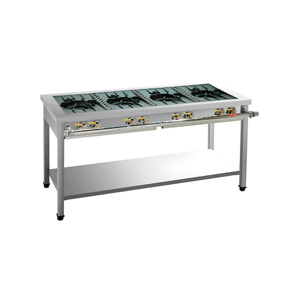
Four-burner commercial standing gas range built for demanding kitchen operations.
VIEW PRODUCT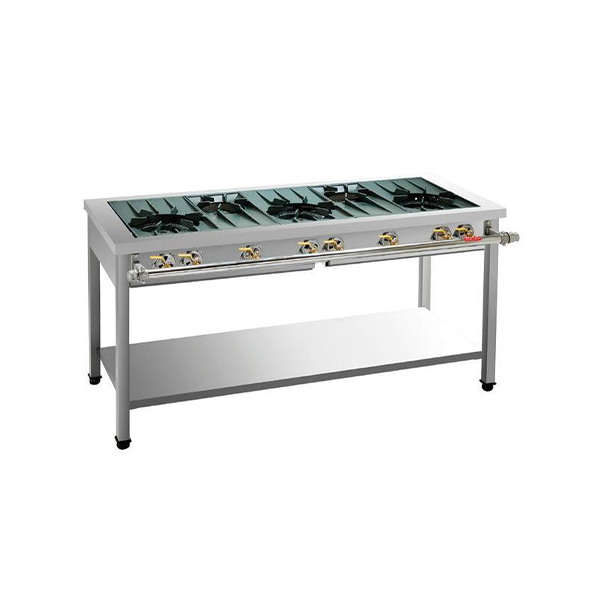
Five-burner commercial standing gas range for high-volume professional kitchens.
VIEW PRODUCT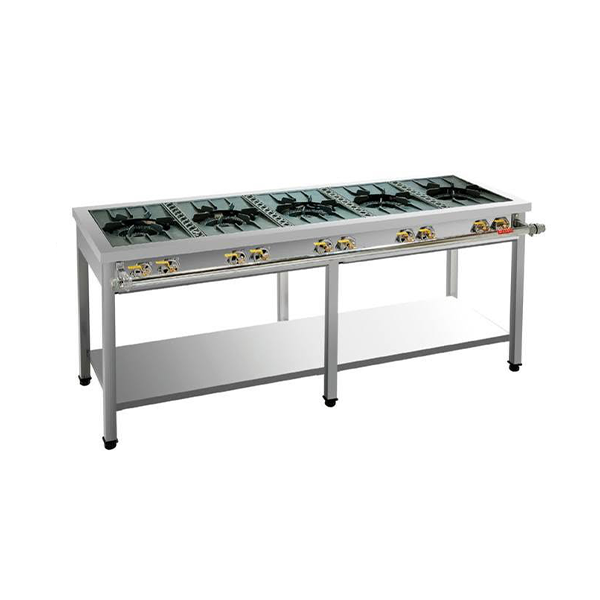
Five-burner commercial standing gas range designed for large professional kitchens.
VIEW PRODUCTCommercial multi-burner gas ranges designed for high-volume and multi-dish cooking in professional kitchens.
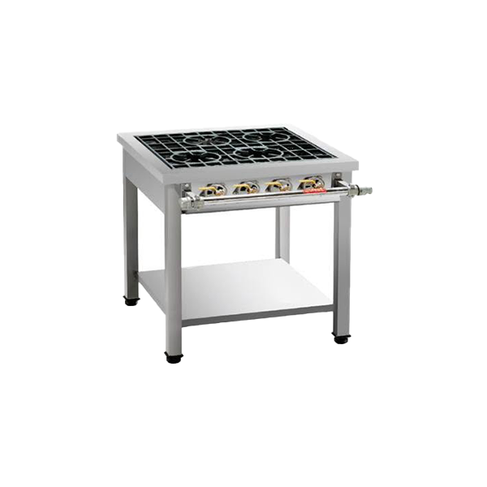
Four-burner commercial multi-burner range for professional kitchen use.
VIEW PRODUCT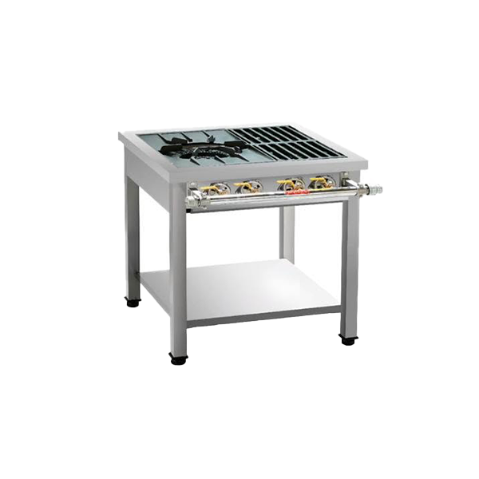
Three-burner commercial multi-burner range with flexible burner configuration.
VIEW PRODUCT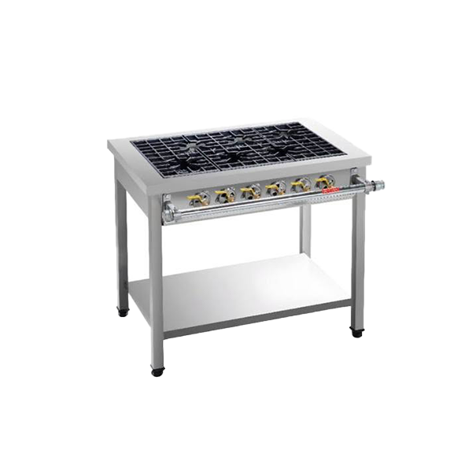
Six-burner commercial multi-burner range for professional kitchens.
VIEW PRODUCT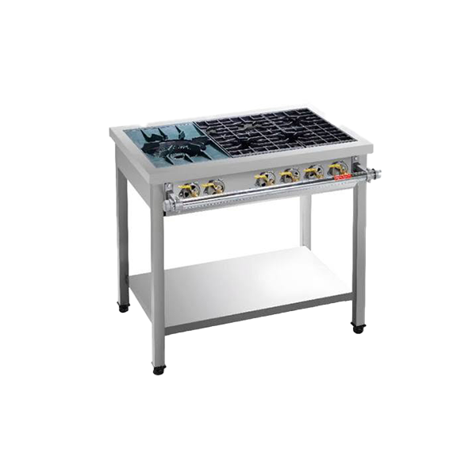
Five-burner commercial multi-burner range for demanding kitchen operations.
VIEW PRODUCT
Nine-burner commercial gas range for high-volume professional kitchens.
VIEW PRODUCT
Seven-burner commercial range with flexible burner configuration.
VIEW PRODUCT
Six-burner commercial multi-burner range designed for professional kitchens.
VIEW PRODUCT
Twelve-burner commercial range built for high-volume kitchen operations.
VIEW PRODUCT
Ten-burner commercial multi-burner range for professional kitchens.
VIEW PRODUCT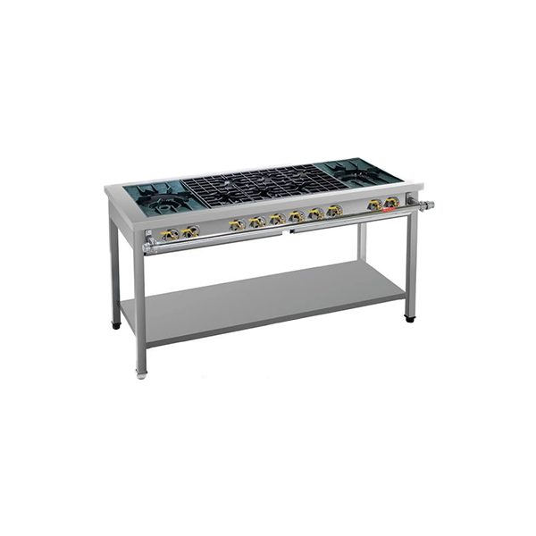
Eight-burner commercial range with flexible burner configuration.
VIEW PRODUCT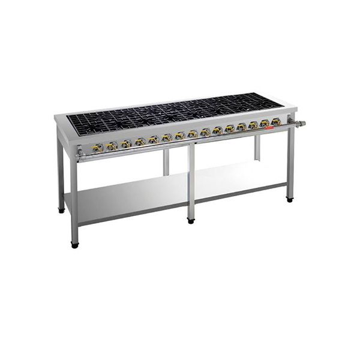
Fifteen-burner commercial range designed for high-volume kitchen operations.
VIEW PRODUCT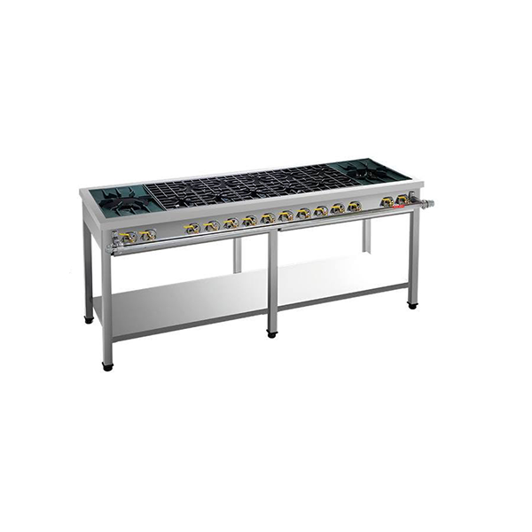
Twelve-burner commercial multi-burner range for large professional kitchens.
VIEW PRODUCT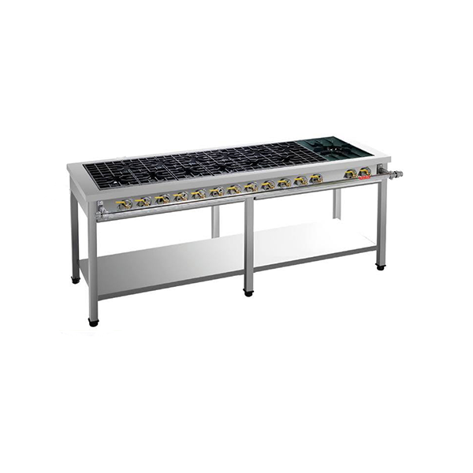
Thirteen-burner commercial range designed for high-volume and multi-dish cooking.
VIEW PRODUCTHeavy-duty low-height gas ranges designed for stock pots, large cookware, and professional kitchen operations.

Compact commercial low range with a heavy-duty triple-ring burner.
VIEW PRODUCT
Single-burner commercial low range with advanced pre-mixed gas combustion.
VIEW PRODUCT
Two-burner commercial low range with advanced pre-mixed gas combustion.
VIEW PRODUCT
Heavy-duty two-burner commercial low range with triple-ring burners.
VIEW PRODUCT